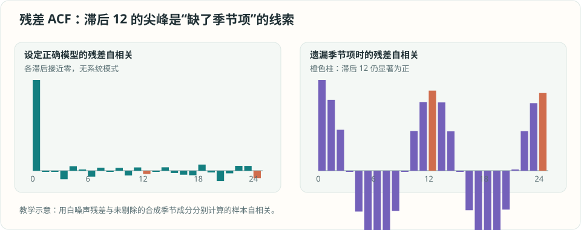
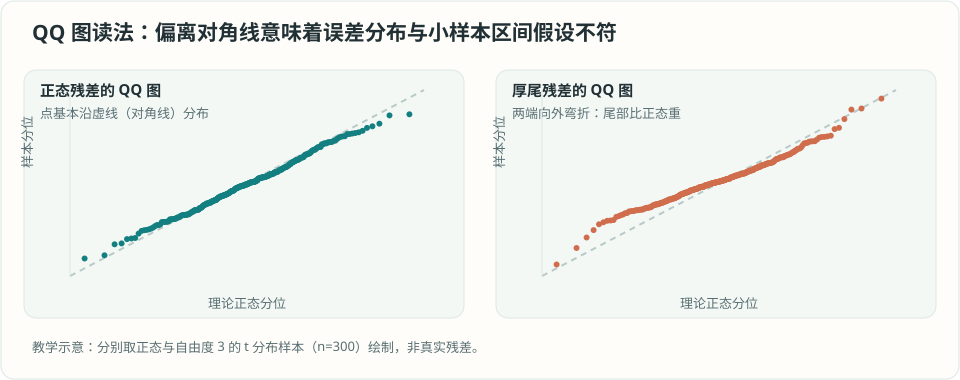

CHAPTER 13 / 28 · STATISTICAL MODELLING
建模实践与残差诊断
从拿到一个真实序列到给出可用模型，中间是一条可迭代的 Box–Jenkins 流程。本章把它拆成可执行的检查：残差诊断、正态与方差齐性、参数显著性与过拟合，以及最容易被忽略的时间泄露。
前几章建立了 AR / MA / ARMA / ARIMA / SARIMA 的理论框架，但理论不等于可操作。真实数据里缺值、异常点、结构突变都会出现，模型选择也常常需要反复几轮。诊断不是建模的最后一步装饰，而是决定模型是否可用的关口。
需要先纠正一个误解：“残差看起来干净”不等于“模型正确”。把阶数堆高可以把样本内的相关结构“吸干”，但这正是过拟合；判断模型价值最终要回到前向预测表现。
01 · 一条可迭代的建模流程
规范的流程包含探索、识别、估计、诊断、验证五步，而且不是单向的：一旦残差诊断未通过，要回到识别阶段重新选阶或补季节项。
- 探索与变换：画时序图，检查缺失值、趋势、季节性与异常点；必要时做方差稳定变换。
- 识别阶数：结合差分结果与 ACF/PACF 形状，圈定 p,q,P,Q 的候选范围。
- 估计参数：拟合 3~5 个候选模型，用信息准则初步比较。
- 残差诊断：检验创新残差是否接近模型假设，这是最关键的关口。
- 前向验证：用留出集或滚动起点评估真正未来窗口的预测。
要强调“识别阶段只能用训练集”：如果先用全样本（含未来）的 ACF/PACF 去定阶，再去做样本外评估，就构成了时间泄露，评估结果会被系统性高估。
02 · 残差诊断的对象与检查
诊断的正确对象通常是模型的创新残差，而不一定是未经滤波的原始剩余。理想情况下它们不含可检出的线性自相关。最常用的两项检查是残差 ACF 与 Ljung–Box 检验。

读数时要分清方向：Ljung–Box 的原假设是“前若干滞后无自相关”，p>0.05 只是“没有拒绝”，并不证明残差是白噪声；接近零也不排除条件异方差或非线性依赖。此外，检验 ARMA(p,q) 残差时通常用 model_df=p+q 调整自由度，且最大滞后必须大于该自由度。
03 · 正态性与方差齐性
残差 ACF 干净只能说明“没有剩余线性自相关”。在关心预测区间的小样本情形，还需检查误差分布形状与方差是否稳定。

另一个常见检查是残差对拟合值的散点图：如果方差随拟合值增大而呈“喇叭形”，往往提示需要对原序列做方差稳定变换（例如对数或 Box–Cox），而不是简单地加阶数。这些检查不满足时，参数的无偏性可能尚可，但区间校准会受影响。
04 · 参数显著性与过拟合
拟合出 ARIMA(3,1,2) 后若发现 φ₂、θ₂ 不显著，稳妥做法是移除这些参数、重新估计，再比较简化前后。信息准则提供了复杂度与拟合的显式权衡。
为什么偏好简洁？若真实数据生成过程是 ARIMA(1,0,1)，却估计了一个 ARIMA(5,0,5)，多出的参数会去拟合样本中的随机噪声——样本内拟合优度看着很高，样本外却变差，这就是典型的过拟合。“参数越灵活越好”是一个危险的直觉。
05 · 常见陷阱
| 陷阱 | 表现 | 缓解方式 |
|---|---|---|
| 过拟合 / 伪诊断 | 阶数很高，样本内残差很“干净”，样本外变差 | 用 BIC 或前向验证；检查是否只是把噪声吸干 |
| 忽略异常值 | 单个巨大异常点扭曲参数与自相关 | 建模前先检测并处理异常点，并记录依据 |
| 时间泄露 | 用含未来的全样本 ACF 定阶，再报样本外指标 | 识别与估计只用训练集 |
| 自动搜索即终点 | 直接采用 auto.arima / pmdarima 的推荐 | 把它当候选起点，再结合残差与前向预测核对 |
这些陷阱的共同点是：它们都只影响未来的、未参与训练的预测，而不是样本内拟合。因此前向验证不是可选项，而是把诊断结论落地的唯一方式，具体做法放在下一章。
06 · Python：候选比较与诊断
下面用真实数据生成过程 ARIMA(0,1,1)（差分序列为 wₜ=εₜ+θ εₜ₋₁ 再累加回水平）生成序列，对若干候选阶数比较 AIC/BIC，并对选中模型做 Ljung–Box 检验。只依赖 numpy 与 statsmodels。
import numpy as np
from statsmodels.tsa.arima.model import ARIMA
from statsmodels.stats.diagnostic import acorr_ljungbox
rng = np.random.default_rng(13)
n, theta1 = 500, -0.4
e = rng.standard_normal(n)
w = np.zeros(n)
for t in range(1, n):
w[t] = e[t] + theta1 * e[t-1] # 差分序列 / MA(1)
y = np.cumsum(w) # 积分回水平
train, test = y[:-60], y[-60:]
rows = []
for p in range(3):
for q in range(3):
if p == 0 and q == 0:
continue
fit = ARIMA(train, order=(p, 1, q), trend="n").fit()
rows.append((round(fit.aic, 2), round(fit.bic, 2), (p, 1, q)))
rows.sort()
print("AIC 最优候选:", rows[0]) # 期望接近真实阶数 (0, 1, 1)
best = ARIMA(train, order=rows[0][2], trend="n").fit()
print(acorr_ljungbox(best.resid, lags=[12],
model_df=rows[0][2][0] + rows[0][2][2]))
assert len(rows) == 8此例中 AIC 会选出与真实 DGP 一致的 (0,1,1)，但这只说明在该合成数据与信息准则下如此，不保证真实数据上同样成立；真实项目中还需对比朴素基准并做滚动前向评估。
07 · 与预测评估的衔接
诊断通过只意味着模型与假设不矛盾，不意味着它值得使用。下一章把重心转向评估：怎样切分训练/测试、怎样做滚动起点前向验证、怎样用 MAE/RMSE/MASE 等指标与朴素基准比较，以及预测区间应当如何校准。
进一步阅读与技术核对
引用指向流程、检验与接口的官方资料。